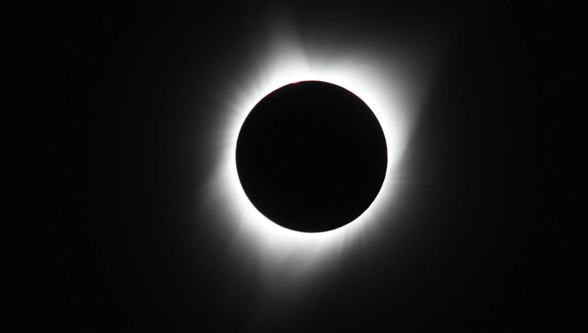
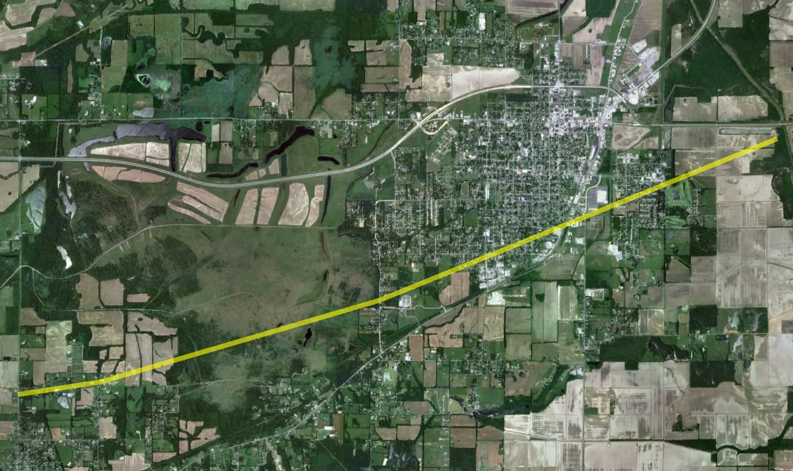
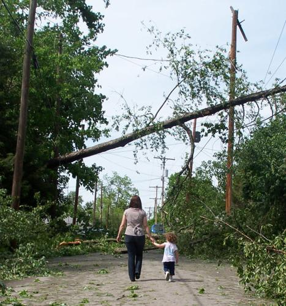

Timeline
-
Total solar eclipse
Not a storm, but one of the biggest events our region has hosted. Carbondale sat near the point of greatest eclipse, and thousands of visitors filled Southern Illinois. Cloud forecasts and spotter reports helped viewers decide where to watch.

-
Leap Day tornado, Harrisburg
A strong early-morning tornado struck Harrisburg in Saline County, destroying homes and claiming multiple lives. It remains one of the deadliest recent tornadoes in our area and a reminder that tornadoes can hit before sunrise and in winter.

-
Derecho across the Midwest
A fast-moving line of storms produced widespread damaging straight-line winds as it crossed Southern Illinois. Wind damage reports from the ground are exactly what spotters are trained to send in.

Be part of the next one
Spotters don't chase storms. They report what they safely see from where they are.
Sign up for a class